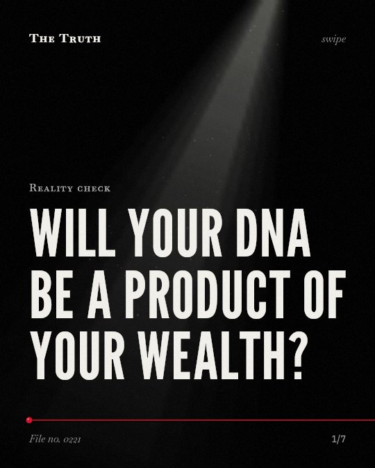

Reality check
Will your DNA be a product of your wealth?

Germline editing lacks a clear advantage over existing selection.
There is no consensus that editing embryos provides substantial benefits over preimplantation genetic diagnosis. The evidence on this is mixed.
Supported. At least one solid peer-reviewed study. The evidence goes against the popular idea.
What the research found
There is no consensus on whether germline genome editing has any substantial advantages over existing procedures like embryo selection after in vitro fertilization (IVF) and preimplantation genetic diagnosis (PGD).
“However, when it comes to the most controversial topic, germline genome editing (GGE), there is no consensus on whether this technology has any substantial advantages over existing procedures such as embryo selection after in vitro fertilization (IVF) and preimplantation genetic diagnosis (PGD).”
Study, 2019. Ranisch, Bioethics.
CRISPR-Cas9 technology is characterized by easy handling, high accuracy, and low cost.
“Among them, CRISPR-Cas9 technology particularly stands out due to its advantages such as easy handling, high accuracy, and low cost.”
Study, 2020. Ayanoğlu et al., TURKISH JOURNAL OF BIOLOGY.
There are some scenarios where only germline intervention allows couples to have biologically related healthy offspring because selection will not avoid disease.
“The paper confirms that there are some scenarios in which only germline intervention allows couples to have (biologically related) healthy offspring, because selection will not avoid disease.”
Study, 2019. Ranisch, Bioethics.
He Jiankui used CRISPR to edit embryos, two of which became living babies in October 2018.
“He Jiankui had used clustered regularly interspaced short palindromic repeats ('CRISPR') to edit embryos-two of which had, sometime in October, become living babies.”
Experiment, 2019. Greely, Journal of law and the biosciences.
CRISPR-Cas9 can correct disease-causing mutations and restore normal gene function.
“CRISPR–Cas9 enables precise gene editing, correcting disease-causing mutations and offering hope for previously incurable genetic conditions.”
Systematic review, 2024. Kolanu, Global Medical Genetics. This shows a link, not a cause.
Technology exists to edit human embryos.
He Jiankui used CRISPR to edit embryos in 2018. The technology is characterized by easy handling, high accuracy, and low cost.
The narrative of a biological class divide is unsupported.
The evidence does not show a wealth-based divide or specific aesthetic enhancements. It only shows the technical capability to correct mutations. That may be why the fear of a new class of humans lacks a factual basis.
This part is our reading of the evidence, not a finding.
You look at a news headline about designer babies.
You read about a new technology and imagine a future of inequality. You wonder if your own biology is becoming a commodity to be bought.
The honest summary
The sources confirm the technical capability of CRISPR for gene editing but do not provide evidence of a wealth-based biological class divide or specific aesthetic enhancements.
None of the provided sources mention wealth, social class, aesthetics, or cognitive traits.
What do you believe about the future of your own DNA?
Sources
- Greely HT (2019). CRISPR'd babies: human germline genome editing in the 'He Jiankui affair'. Journal of law and the biosciences. Experiment, cited 254 times.
- Nikhil Deep Kolanu (2024). CRISPR–Cas9 Gene Editing: Curing Genetic Diseases by Inherited Epigenetic Modifications. Global Medical Genetics. Systematic review, cited 81 times.
- Fatma Betül Ayanoğlu, Ayşe Eser ELÇİN, Yaşar Murat Elçin (2020). Bioethical issues in genome editing by CRISPR-Cas9 technology. TURKISH JOURNAL OF BIOLOGY. Study, cited 210 times.
- Robert Ranisch (2019). Germline genome editing versus preimplantation genetic diagnosis: Is there a case in favour of germline interventions?. Bioethics. Study, cited 60 times.
Also read for this file, not quoted
- Brokowski (2018). Do CRISPR Germline Ethics Statements Cut It?.
- Brokowski & Adli (2019). CRISPR Ethics: Moral Considerations for Applications of a Powerful Tool.
This file was researched and drafted by software, then checked by rules a model cannot talk its way around: each quote above was matched word for word against the paper, and every number had to appear in it. How files are made.